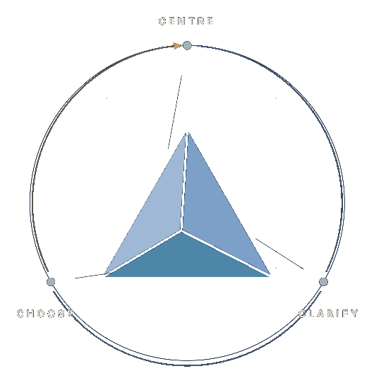

Three evidence bases.One sequence.
Not eclectic. Not opinion. The Executive Frame™ rests on three of the most robust evidence bases in applied psychology — emotional intelligence, executive functioning, and self-determination theory. Each domain anchored by a primary theorist; each enriched by complementary clinical traditions. Eight literatures that converge on the same architectural insight: regulate, then clarify, then choose.

Established evidence. Practical application.
Each domain draws on established psychological research and complementary clinical models. Open a section to review the key mechanisms, evidence base, and practical tools.
Steady first
The body settles before the mind can read.
Then think
Trainable focus — the first thing load erodes.
Then act
Agency restored — the deliberate move.
The evidence, expanded.
01Centre — the regulation substrate
The brain works bottom-up: subcortical systems must be stable before cortical functions — reasoning, judgement, planning — operate cleanly. Regulation is a neurobiological precondition, not a preference.
Perry · Goleman · Linehan
In practice: S.H.I.F.T.™ · The Capacity Check · Centre tools
02Clarify — cognition under load
Working memory, inhibition, and flexible thinking are trainable — and they simplify under sustained load. Clarify protects metacognition so judgement holds when it matters.
Barkley · Beck · Ericsson
In practice: The C³ Loop™ · The Decision Map · Now–Do–Later
03Choose — values-aligned agency
Lasting motivation rests on autonomy, competence, and relatedness. Choose restores self-determined action and the identity work that sustains a career.
Deci & Ryan · Dweck · McGonigal
In practice: The C³ Values™ Deck · Agency Map · The Reframe Check
Check. Learn. Reset. Begin.
Choose a structured assessment, practical resources, a real-time regulation tool, or support matched to your needs.
The Capacity Check™
Identify which area of functioning is currently under the greatest strain.
Start the check→ 02LearnTools and resources
Use evidence-informed guides and worksheets to understand patterns and apply practical strategies.
Browse the tools→ 03ResetS.H.I.F.T.™
Reduce arousal, restore attention, and interrupt reactive behaviour when pressure rises.
Use S.H.I.F.T.™→ 04BeginStart an intake
Tell us what you need so we can identify the most appropriate pathway for support.
Start your intake→